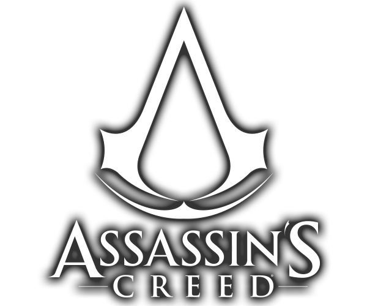
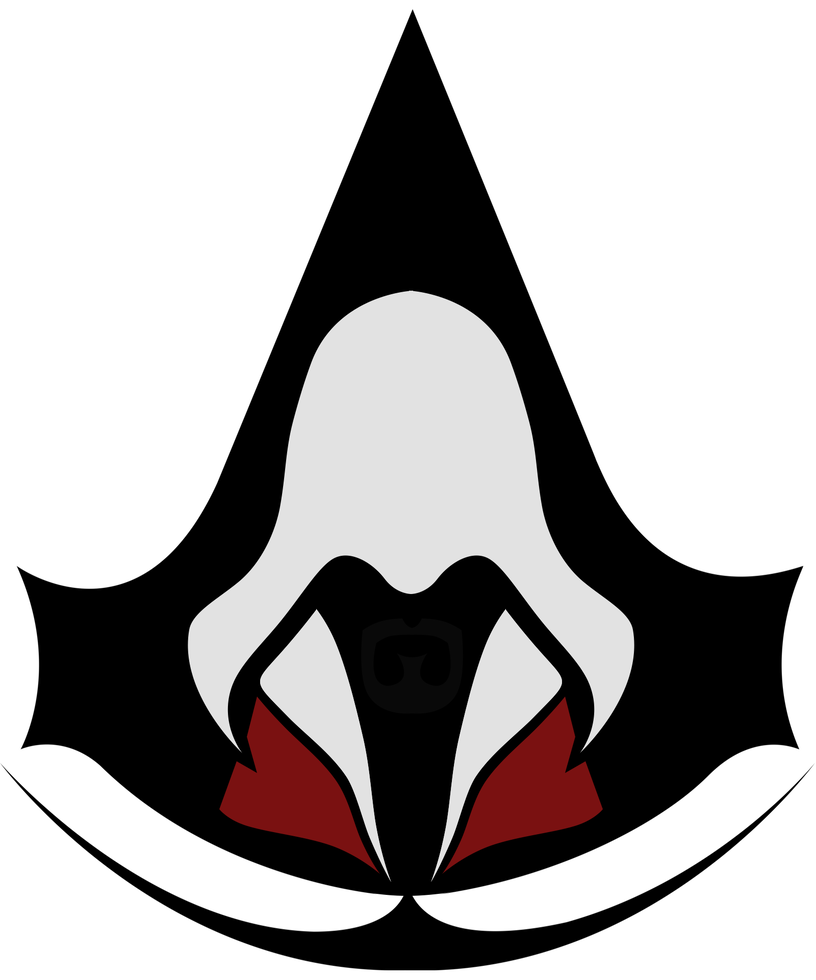

Assassin's Creed
Nothing is true, everything is permitted
Assassin's Creed é uma série de videogame. A premissa central envolve-se a partir da rivalidade entre duas sociedades secretas ancestrais: os Assassinos que desejam a paz através do livre arbítrio e os Templários, que têm o objetivo de dominar o mundo . Ambos tiveram uma relação indireta com uma espécie que viveu antes dos humanos, cuja sociedade foi destruída por uma gigantesca tempestade solar. Misturando personagens e ficção histórica com eventos e figuras reais, a ordem cronológica dos jogos começa em 2012, e fala de Desmond Miles, um jovem que com a ajuda do Animus (uma máquina que permite ver as suas "memórias ancestrais"), explora as memórias de alguns dos mais proeminentes Assassinos da história.

Quando os outros homens seguirem cegamente a verdade, lembra-te...Nada é verdade. Quando os outros homens estiverem limitados pela moralidade ou pela lei, lembra-te...Tudo é permitido. Nós trabalhamos nas sombras para servir a luz. Nós somos Assassinos.

Assassinos nunca devem prejudicar inocentes e sempre alvejar apenas os inimigos.
Assassinos devem manter sua identidade, e a própria existência da Irmandade, em segredo.
Um Assassino nunca deve tomar uma ação que possa comprometer a Irmandade.